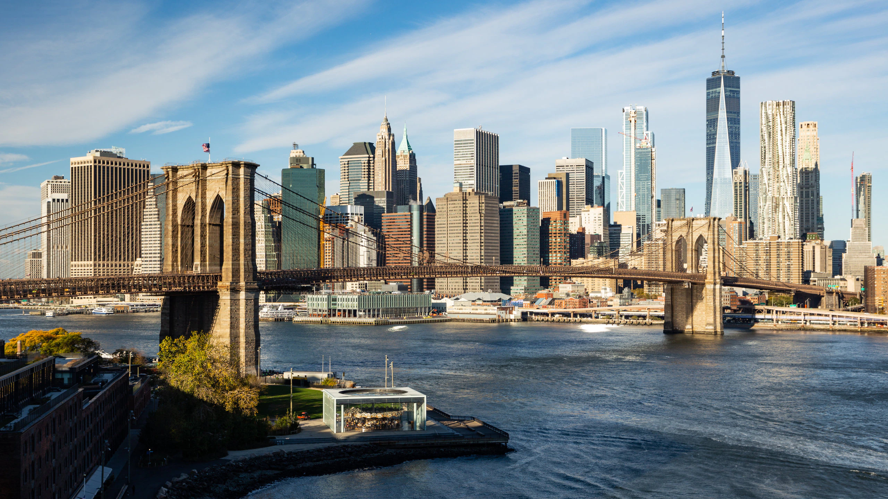
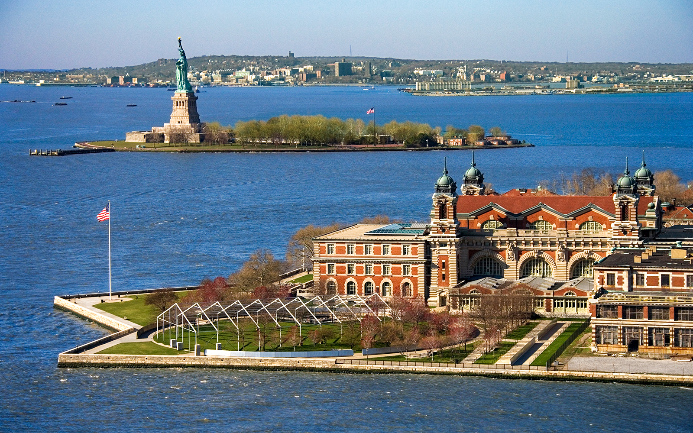

Esplora New York interattivamente
Esplora New York interattivamente

Scopri New York, fondata nel 1624 come avamposto commerciale olandese con il nome di New Amsterdam sull'isola di Manhattan. Con l'arrivo degli inglesi nel 1664 e il cambio di nome in New York, la città iniziò la sua ascesa come centro vitale di commercio, cultura e innovazione. Grazie alla sua posizione strategica sull'Atlantico, New York divenne una porta d'accesso fondamentale per milioni di immigrati e un crocevia globale di opportunità e sogni.
Attraverso secoli di trasformazioni, New York ha saputo resistere e rinascere: dai devastanti incendi del XVIII secolo, passando per la crisi economica del 1929, fino agli eventi dell'11 settembre 2001. Simbolo di resilienza, la città si è sempre rialzata, continuando a brillare con la sua energia inarrestabile e il suo spirito indomabile, incarnato nei suoi grattacieli, nei parchi, nei quartieri multietnici e nei suoi iconici ponti come il Brooklyn Bridge.
Immigrazione, Cultura e Innovazione

Dalla corsa all'immigrazione di Ellis Island, che accolse milioni di speranze provenienti da ogni angolo del mondo, alla rivoluzione culturale di Harlem durante il Rinascimento di Harlem, New York è sempre stata un motore di cambiamento globale. Le lotte per i diritti civili, la nascita della cultura hip-hop nel Bronx e l'affermazione artistica di quartieri come SoHo e Greenwich Village hanno scolpito un'identità unica: vibrante, inclusiva e rivoluzionaria.
Creativa, dinamica, eterna: New York continua a plasmare il futuro nei suoi laboratori d'arte contemporanea, nei centri finanziari come Wall Street, nei teatri di Broadway e nelle start-up innovative di Brooklyn. Dai prati sconfinati di Central Park alle luci inesauribili di Times Square, ogni angolo racconta una storia di ambizione, sfida e rinascita continua, rendendo la città uno dei simboli più potenti e ammirati della modernità mondiale.